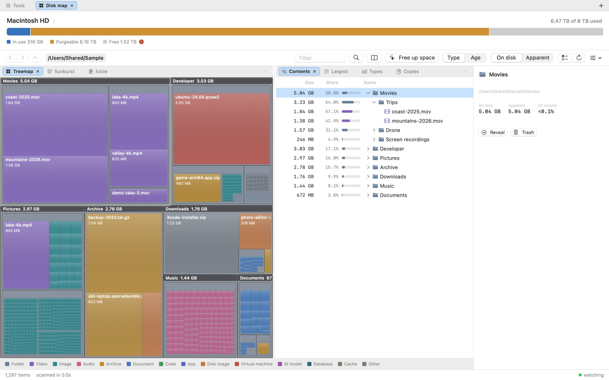
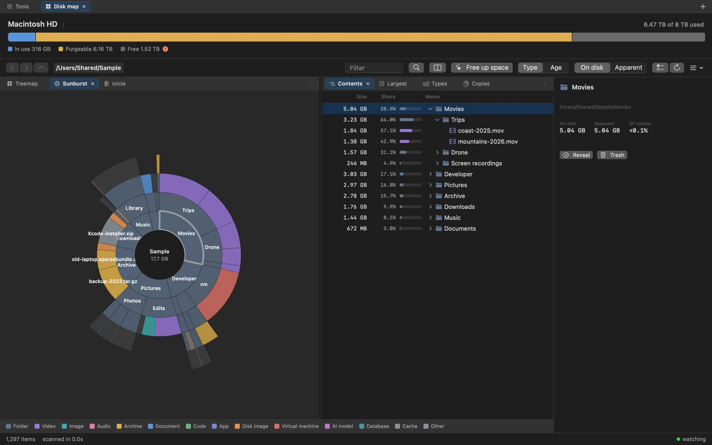
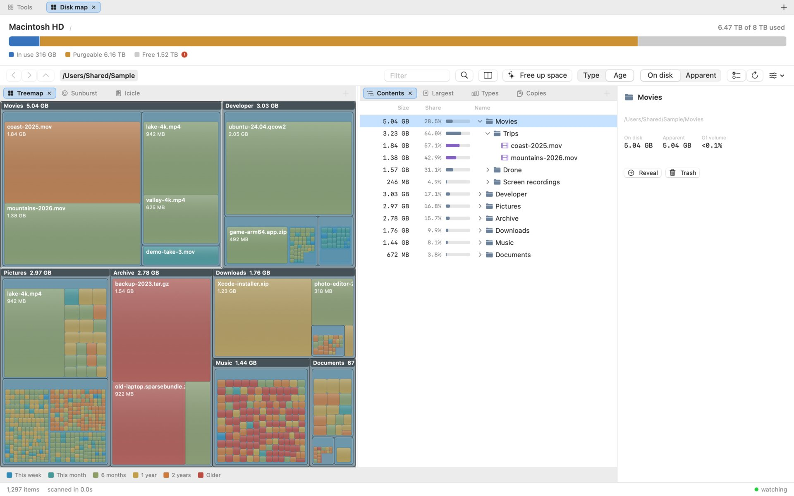
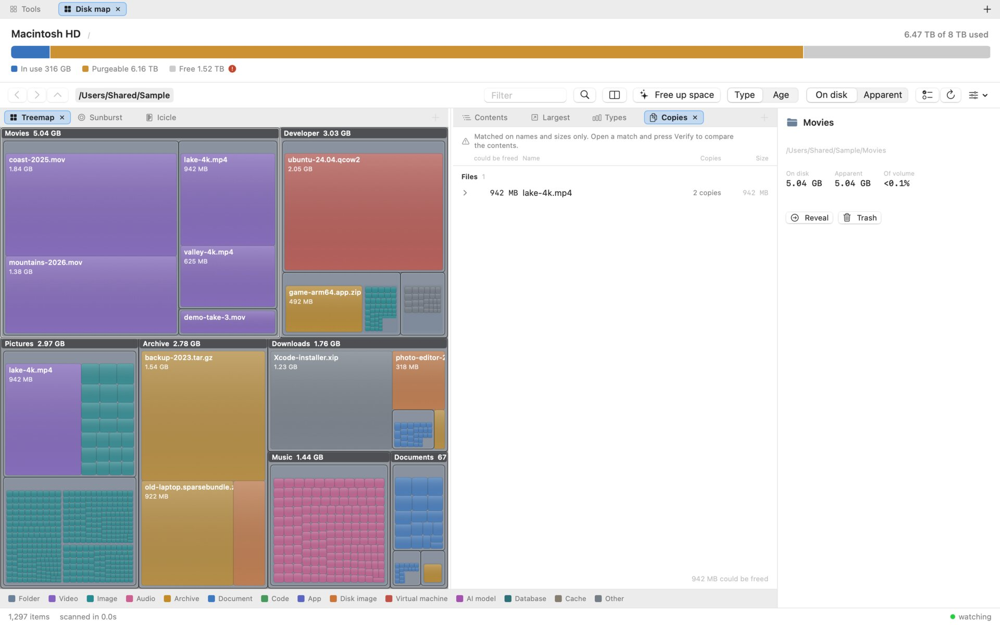
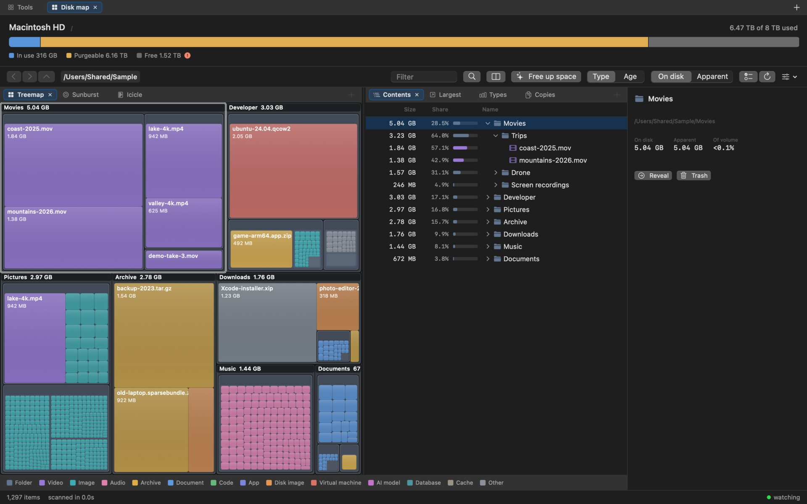

macOS 14+ · native Swift · English and Turkish · MIT
Free space is not what Finder says it is.
Finder counts purgeable content — evictable iCloud files, caches, local snapshots — as if it were already free. Disk Map shows capacity, used, purgeable and actually writable side by side, measures the bytes a file really occupies, and explains every byte it cannot attribute to a file instead of rounding the difference away.

On the machine it was built on, Finder said 7.25 TB available. What could actually be written was 1.14 TB; the other 6.12 TB was purgeable content counted as free. A disk analyzer that repeats Finder's number, or sums apparent file sizes to 15 TB on an 8 TB disk, gives advice nobody can act on.
Bytes on disk, not file sizes
The scanner records allocated size, which is what changes when you delete something; apparent size sits beside it. One toggle switches every view between the two.
iCloud placeholders count as zero
Dataless stubs report a size but occupy nothing locally, so they are counted as zero and flagged. The scanner never opens a file, so browsing never triggers a download.
Three pictures of one scan
A treemap for what takes the space, a sunburst for the shape of the tree, an icicle for comparing siblings. Colour by kind of file or by how long ago it was touched.
Duplicate folders, not just files
Folders are matched by a hash of everything below them, so a renamed copy still matches, and partial copies are reported too. Verify reads every byte of a match before you trust it.
A plan before the Trash
Nothing is deleted without seeing what stays: every copy on one card, each row marked Stays or Trash. It goes to the real Trash, so Put Back works, and ⌘Z undoes the batch.
What changed since last time
Every scan leaves a small digest. ⇧⌘D compares the disk now with an earlier scan and attributes each change to the deepest folder that explains it.
Six ways to look at the same scan
They answer different questions, so they are one click apart. The pictures show a made-up folder tree, not a real disk.

- Treemap
Area is bytes, so the biggest rectangle is the thing worth deleting. Folder frames show which folder owns a block.
- Sunburst
Depth is the radius, so a long chain of nested folders shows as a spoke instead of vanishing into a block.
- Icicle
Size is length and nothing else: siblings line up in a row you can read across.
- Largest, by type, by age
The biggest files anywhere below the current folder; where the space went by kind of file; 29.3 GB untouched for over two years.
- Copies
Duplicate folders first, then files, ordered by what deleting the extras would free.
Install
From source, with the Swift toolchain that comes with Xcode or the Command Line Tools. macOS 14 or newer. No password prompt, no sandbox, nothing downloaded at run time.
Build and install
git clone https://github.com/mmdemirbas/diskmap.git
cd diskmap
./install.sh # build, sign, install
./install.sh --dev # run from ./build insteadThe installer creates a local code-signing certificate once, so the Full Disk Access grant survives rebuilds, then opens the Privacy pane for you to drag the app in.
Uninstall
./uninstall.sh --dry-run # show the plan
./uninstall.sh # remove it allIt removes the app, its preferences and the certificate, and resets the Full Disk Access entry, so no dead row stays behind in System Settings.
More pictures
Rendered by the app itself from a made-up folder tree; Scripts/screenshots.sh builds the tree and renders them again.



Three ways a disk analyzer lies
And what Disk Map does instead.
| The trap | What it does instead |
|---|---|
| Apparent size. Summing file sizes over one home folder gave 15.24 TB on an 8 TB disk. | Records allocated size (ATTR_FILE_ALLOCSIZE) as the primary metric; apparent size is shown next to it. |
| iCloud placeholders. 1.43 million files on that machine were dataless stubs that free nothing when deleted. | Detected via SF_DATALESS, counted as zero, flagged in the interface; never opened. |
Hard links and firmlinks. A naive walk of / counts /Users and /Applications twice. | Extra links to one inode are counted once; firmlinked paths are excluded from a volume scan. |
Cost, measured
A full scan of an 8 TB startup disk holding 11.6 million files, on an M-series Mac. The figures scope to that machine.
| Time | 66–70 s, about 166k entries per second on 12 threads |
| Peak memory | 0.69 GB; the tree itself is 568 MB, 49 bytes per node |
| CPU split | user 12.7 s, system 288 s: 96% of the work is the kernel reading directories |
| Duplicate folders | 0.59 s over 9.6 million nodes, of which 0.23 s hashes all of them |
Traversal is getattrlistbulk(2), one system call per batch of entries rather than readdir plus stat per file. The app records its own timings to a local file with no paths or file names in it; dmbench metrics reads them back.
Known limits
- APFS clones cannot be detected through any public API; cloned bytes appear in the unaccounted line of the reconciliation panel rather than being silently absorbed.
- Directory metadata blocks are not counted; they also show up as unaccounted.
- A cancelled scan is discarded rather than shown as a partial tree, because a partial total would read as a real one.
- There is no unattended sync. Every folder sync goes through a plan somebody read.
- No prebuilt download yet; it builds from source with the Swift toolchain.